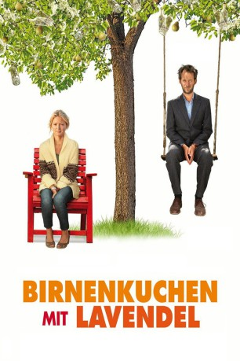

#4653 Birnenkuchen mit Lavendel
 gesehen am 02.11.2016
gesehen am 02.11.2016
 
 IMDB-Wertung: 6.9 / 10
IMDB-Wertung: 6.9 / 10  Metascore: 0
Metascore: 0 
Seit dem Tod ihres Mannes kümmert sich Louise allein um ihre beiden Kinder Emma und Felix, bewirtschaftet außerdem noch den familiären Birnen- und Lavendelhof in der Provence. Sie kümmert sich um die Ernte und backt exzellenten Birnenkuchen, hat aber trotzdem Probleme, ihren Kredit bei der Bank zu bedienen. Die wirtschaftliche Zukunft ist düster, als Louise eine folgenreiche Begegnung hat: Aus Versehen fährt sie vor ihrem Haus einen Fremden an: Pierre. Er ist ordentlich, extrem ehrlich, sensibel und lebte bisher zurückgezogen und eigenbrötlerisch. Doch er geht aus sich heraus, wann immer er Zeit mit Louise verbringt – und das tut er fortan öfter, da er sehr gut mit Zahlen umgehen und der Witwe darum mit ihrem Betrieb helfen kann. Pierre freut, dass er so etwas wie ein Zuhause gefunden hat. Louise jedoch will ihn nicht zu nahe an sich heranlassen, sie leidet nach wie vor unter dem Verlust ihres Ehemanns…
Jahr: 2015
Dauer: 100 Minuten
FSK:
Land: Frankreich Studio: good movies!Tonspuren:
Untertitel: Deutsch,
Auflösung: 1080p (1920x800) Größe: 4741 MB
Genre: Komödie, Drama, Liebe
Regisseur: Éric Besnard
Drehbuch: Olivier Assayas
Soundtrack:
Darsteller:
 Virginie Efira als Louise Legrand
Virginie Efira als Louise Legrand Hiam Abbass als Dr. Mélanie Ferenza
Hiam Abbass als Dr. Mélanie Ferenza- Benjamin Lavernhe als Pierre
- Lucie Fagedet als Emma Legrand
- Léo Lorléac'h als Félix Legrand
- Hervé Pierre als Jules
- Laurent Bateau als Paul
- Natalie Beder als La jeune femme librairie
- France Darry als La cliente marché
- Valentin Merlet als Le banquier
- François Bureloup als Le patron du bar
- Franck Adrien als L'aide-soignant
- Julien Ratel als Le livreur de fleurs
- Stéphane di Spirito als Le 1er client marché
- Alain Gressot als Le 2e client marché
- Christian Valsamidis als Le chanteur karaoké
Datei: X:\2015(A-F)\Birnenkuchen mit Lavendel (2015, FSK, 1920x800).mkv seit 31.10.2016
Festplatte: HD 2015(A-Z)
 Es gibt insgesamt 143 Filme in der Gruppe '2015(A-F)'
Es gibt insgesamt 143 Filme in der Gruppe '2015(A-F)'